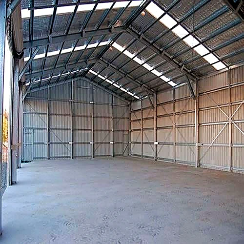
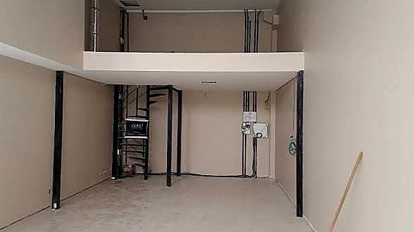

A escada de ferro resolve dois problemas que o concreto raramente resolve junto: ocupa menos área útil e é instalada em obra já pronta, sem quebra-quebra. Em sobrados, lofts e mezaninos de São Paulo, isso costuma decidir o projeto. Abaixo está o que realmente muda o resultado — formato, dimensionamento e acabamento — para você pedir orçamento sabendo o que está contratando. A estrutura sai em ferro na maioria dos projetos; guarda-corpo e acabamento executamos também em aço inox e alumínio.
Exemplos de Escadas Fabricadas


Os quatro formatos e quando cada um faz sentido
O formato não é escolha estética: ele é definido pelo vão disponível e pelo pé-direito.
- Reta: a mais econômica e a mais confortável de subir. Exige o maior comprimento livre — em pé-direito de 2,80 m, conte com cerca de 3,5 a 4 m de projeção horizontal.
- Em L: resolve o canto do ambiente com um patamar intermediário. É a escolha mais comum em sobrados quando a reta não cabe.
- Em U: dobra o percurso sobre si mesmo. Ocupa pouca área em planta e permite dois lances curtos, bom para pé-direito alto.
- Caracol: a menor área ocupada de todas, a partir de cerca de 1,20 m de diâmetro. Em compensação é a menos confortável, e não é indicada como rota principal de uma casa com crianças, idosos ou trânsito de móveis.
Tabela Comparativa de Modelos de Escadas Metálicas
Confira a comparação técnica entre os principais modelos de escadas metálicas fabricados sob medida para residências e comércios em São Paulo:
| Modelo | Vão Mínimo | Nível de Conforto | Materiais Recomendados | Melhor Aplicação |
|---|---|---|---|---|
| Escada Reta | 3,5m x 0,9m | Excelente (Alto) | Aço Carbono, Inox, Madeira | Acesso principal em sobrados e salas comerciais |
| Escada em L | 2,5m x 2,0m | Alto (Com Patamar) | Aço Estrutural, Degrau Xadrez | Cantos de parede e sobrados residenciais |
| Escada Caracol | 1,2m x 1,2m | Moderado (Acesso Secundário) | Tubo de Ferro, Aço Galvanizado | Espaços reduzidos, sótãos, lajes e terraços |
| Santos Dumont | 1,8m x 0,7m | Compacto (Degraus Alternados) | Aço Carbono, Metalon Reforçado | Mezaninos, lofts e locais com pouca extensão horizontal |
Dimensionamento: o que separa uma escada segura de uma perigosa
Aqui está a parte que o cliente raramente vê no orçamento, e que é justamente onde a escada dá certo ou errado. O degrau tem duas medidas: o piso (onde o pé apoia) e o espelho (a altura entre um degrau e outro).
- A relação entre os dois segue a fórmula de Blondel: dois espelhos mais um piso devem somar entre 63 cm e 65 cm. Fora dessa faixa, a escada cansa na subida e fica insegura na descida.
- Todos os degraus do mesmo lance precisam ter exatamente a mesma altura. Diferença de poucos milímetros no último degrau é uma das causas mais comuns de tropeço.
- Largura útil: em residências, entre 0,90 m e 1,00 m atende bem. Rotas de saída em edificações comerciais seguem exigência maior e precisam ser verificadas caso a caso.
Os valores de referência acima vêm das normas brasileiras de escadas e saídas de emergência. O que vale para o seu imóvel depende do uso, da ocupação e da legislação municipal — na visita técnica conferimos isso antes de fechar o projeto.
Estrutura, degrau e acabamento
Três decisões definem a durabilidade:
- Estrutura: perfil U, tubo metalon ou viga central (escada tipo espinha de peixe). O dimensionamento acompanha o vão livre — quanto maior o vão sem apoio, mais robusto o perfil.
- Degrau: chapa xadrez é o padrão pela aderência; grelha metálica escoa água e é comum em área externa; chapa lisa com revestimento em madeira ou porcelanato atende projetos de interior.
- Acabamento: este é o item que mais economiza dinheiro no longo prazo. Tratamento antiferrugem com primer aplicado sobre superfície limpa, seguido de esmalte sintético. Em área externa ou litoral, galvanização compensa o custo adicional.
Como funciona do orçamento à instalação
Quatro etapas, sem surpresa no meio do caminho:
- 1. Contato: você envia fotos do local e medidas aproximadas pelo WhatsApp e já recebe uma estimativa inicial.
- 2. Visita técnica: medimos o vão real, o pé-direito e conferimos os pontos de fixação. É aqui que o prazo e o valor final são fechados.
- 3. Fabricação: a estrutura é cortada, soldada e tratada na oficina, não na sua casa.
- 4. Instalação: montagem no local, com ajuste fino de nível e prumo.
Erros que mais encontramos em serviço de terceiros
Boa parte do que atendemos é refação. Estes são os problemas que mais aparecem, e todos são evitáveis na execução:
- Último degrau com altura diferente dos demais. Acontece quando a escada é fabricada antes de conferir o piso acabado — e é a principal causa de tropeço na descida.
- Escada dimensionada pelo espaço disponível em vez do conforto de uso. Comprimir a projeção para caber força espelho alto e piso curto, e o resultado é uma escada cansativa que ninguém quer usar.
- Fixação em alvenaria de vedação em vez de elemento estrutural. A escada funciona no primeiro ano e começa a trabalhar depois.
- Pintura aplicada sobre superfície oxidada ou engordurada. A tinta descasca em meses e a ferrugem continua trabalhando por baixo.
Se você reconheceu algum desses no seu imóvel, vale uma avaliação antes que vire substituição completa.
O que enviar para agilizar o orçamento
Quanto mais completa a informação inicial, mais próxima da realidade fica a estimativa. Envie pelo WhatsApp:
- altura total do piso inferior ao piso superior acabado (pé-direito)
- o espaço livre disponível em planta para a escada
- se o piso de cima já está executado ou ainda vai receber acabamento
- fotos do vão pelos dois pavimentos
Com esses dados conseguimos dar uma faixa inicial no mesmo dia. O valor final é sempre fechado depois da visita técnica, com as medidas conferidas no local.
Onde atendemos
Atendemos a capital paulista e toda a Grande São Paulo. Boa parte dos nossos serviços é executada na Zona Sul — região do Campo Limpo, Capão Redondo, Jardim São Luís, Santo Amaro e M'Boi Mirim, onde fica nossa oficina — mas trabalhamos em todas as regiões da cidade e nos municípios vizinhos.
Para serviços fora da capital, informe o município junto com as medidas: o deslocamento entra na estimativa desde o começo, sem surpresa depois.
Perguntas frequentes sobre escadas de ferro
Quanto custa uma escada de ferro?
O valor depende do formato, da altura a vencer, do tipo de degrau e do acabamento. Uma escada reta simples e uma caracol com degrau revestido têm custos bem diferentes. Enviamos orçamento gratuito após avaliar fotos, medidas ou visita técnica.
Qual escada ocupa menos espaço?
A caracol, que parte de cerca de 1,20 m de diâmetro. Se o espaço permitir, porém, a escada em L costuma ser o melhor equilíbrio entre área ocupada e conforto de uso.
Dá para instalar escada de ferro em obra já pronta?
Sim, e é uma das principais vantagens do ferro. A estrutura é fabricada na oficina e montada no local, com fixação pontual — sem a quebradeira que uma escada de concreto exigiria.
Escada de ferro enferruja?
Só se o tratamento for malfeito ou inexistente. Com preparo de superfície correto, primer antiferrugem e esmalte, a manutenção se resume a repintura periódica. Em área externa exposta, a galvanização amplia bastante esse intervalo.
Peça seu orçamento
Envie fotos do local e as medidas aproximadas pelo WhatsApp. Retornamos com uma estimativa inicial e, se fizer sentido, agendamos a visita técnica para fechar valor e prazo — sem compromisso.
Falar no WhatsApp: (11) 96640-8235
Outros serviços
- Corrimãos e Guarda-Corpos
- Portões Manuais e Automáticos
- Mezaninos Metálicos
- Coberturas Metálicas
- Grades, Solda e Manutenção
Antes de decidir, vale ler dois guias nossos: como escolher a escada de ferro ideal, que compara os formatos reta, caracol e em L, e o que define o preço de uma escada de ferro, que explica cada fator do orçamento.